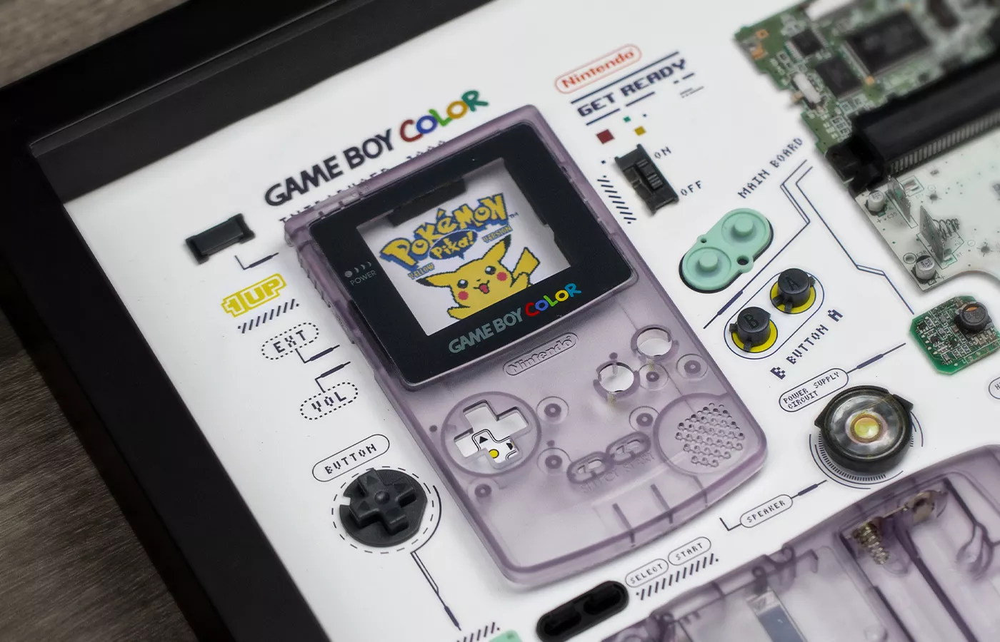

Medio siglo de videojuegos
Prácticamente desde hace 50 años convivimos con los videojuegos. Desde principios de la década de los 70 del siglo pasado, el mundo ha ido viendo de forma progresiva pequeños pasos en el mundo del entretenimiento electrónico que nos han llevado desde aquellos viejos Pong de las consolas domésticas hasta los trazados de rayos de los que presumen nuestras PS5 y Xbox Series X actuales. Por el medio, nueve generaciones que han llenado el tiempo de ocio y entretenimiento de cientos de millones de personas en todo el mundo.